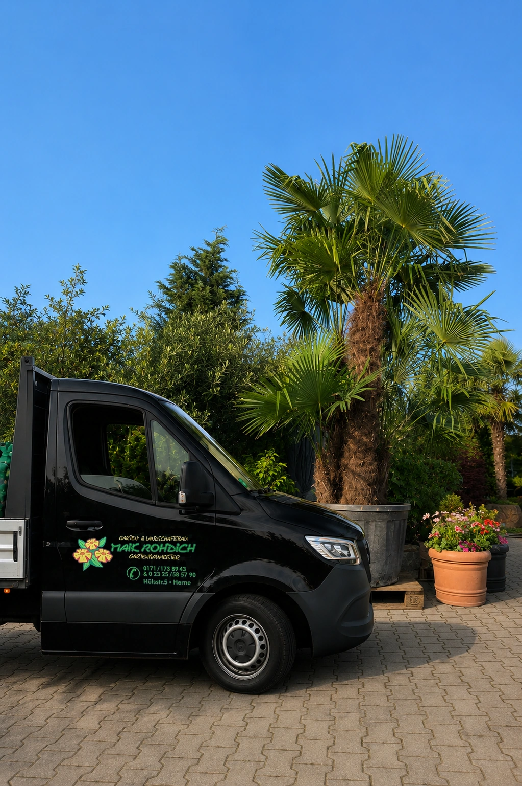
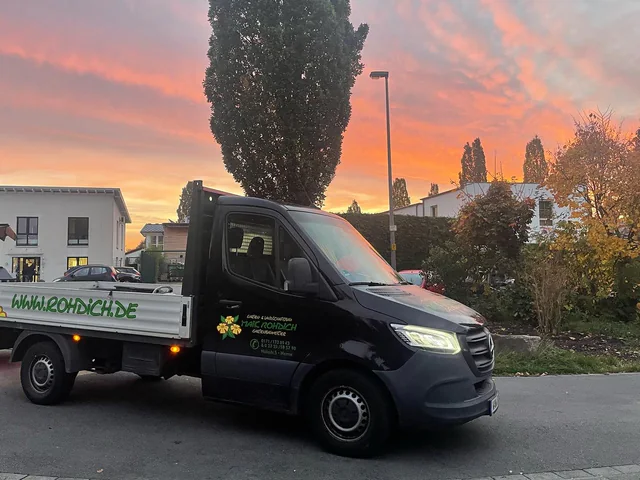
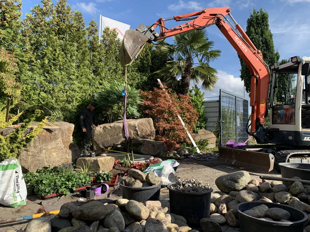
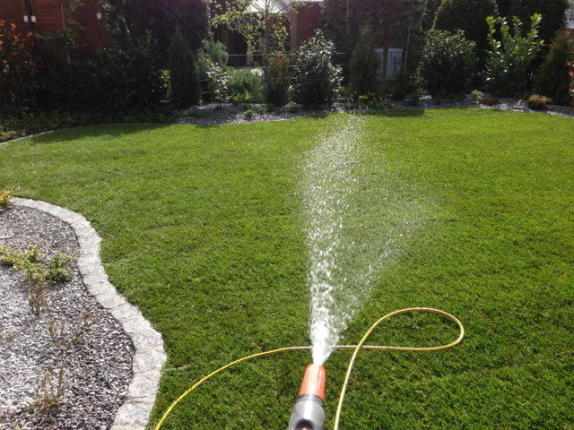
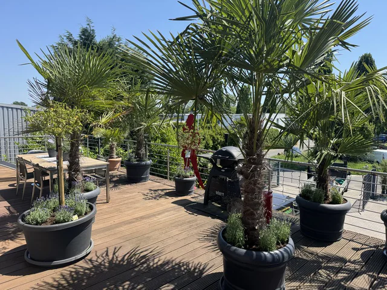

Leistung
Nassschneidearbeiten
Saubere Übergänge bis ins Detail
Sauber zugeschnittene Steine und Platten sorgen für ordentliche Übergänge an Stufen, Beetkanten und Terrassenabschlüssen. Mit unseren Nassschneidearbeiten passen wir das Material an die benötigten Maße an. So entstehen passgenaue Anschlüsse und ein stimmiges Fugenbild.

Was wir für Sie übernehmen
Beim Nassschneiden wird die Schnittstelle mit Wasser gekühlt. Das bindet einen Teil des entstehenden Staubs und unterstützt die materialgerechte Bearbeitung. Welche Zuschnitte möglich sind, hängt vom Werkstoff, seiner Stärke und dem gewünschten Format ab.
Zuschnitte für Ihre Außenanlage
Wir klären die Schnittführung möglichst früh in der Planung. Das hilft, ungünstige Reststücke zu vermeiden und Material sinnvoll einzuteilen. Gerade an sichtbaren Abschlüssen lohnt sich diese Vorbereitung.
- Anpassen geeigneter Pflastersteine und Terrassenplatten
- Zuschnitte an Rändern, Einfassungen und Übergängen
- Abstimmung der Schnittmaße auf Verlegebild und Fugen
- Einbindung der Schneidearbeiten in Pflaster- und Terrassenprojekte
Zu allen Fragen rund um Ihre Nassschneidearbeiten und zur Vereinbarung eines unverbindlichen Beratungsgespräches steht Ihnen unser Fachpersonal gerne zur Verfügung.
Einblicke in unsere Arbeit
Seitlich wischen



In fünf Schritten zu Ihrem Projekt
Termin vor Ort
Wir lernen Ihr Grundstück und Ihre Vorstellungen in Ruhe kennen. Anschließend beraten wir Sie persönlich und erstellen ein präzises Aufmaß.

Termin bei uns in der Ausstellung
Wir helfen Ihnen bei der Materialauswahl und klären Ihre Rückfragen.

Ausarbeitung Individualangebot
Wir stellen Ihnen die passende Lösung vor.
Auftragserteilung & Ausführung
Wir starten gemeinsam mit Ihnen.
Erhaltungspflege
Erhaltungspflege nach Wunsch und Absprache.
Häufige Fragen
Welche Steine und Platten lassen sich nass schneiden?
Nassschneiden eignet sich für verschiedene mineralische Baustoffe. Wir prüfen Material, Stärke und gewünschte Schnittführung und wählen die passende Bearbeitung. Dabei zeigen wir Ihnen, wie sich die benötigten Anschlüsse sauber herstellen lassen. Die anschließenden Pflasterarbeiten oder die Verlegung Ihrer Terrassenplatten übernehmen wir bei Bedarf ebenfalls.
Können Sie auch mein eigenes Material zuschneiden?
Ja. Für die erste Anfrage genügt eine kurze Beschreibung Ihres Vorhabens. Welche Angaben wir zu Material, Stärke, Stückzahl und Maßen benötigen, klären wir gemeinsam. Ein vorhandenes Foto kann dabei helfen, ist aber keine Voraussetzung.
Der erste Schritt zu Ihrem Projekt
Vielen Dank für Ihre Anfrage.
Ihre Angaben sind bei uns eingegangen. Wir sehen uns Ihr Vorhaben an und melden uns persönlich bei Ihnen.